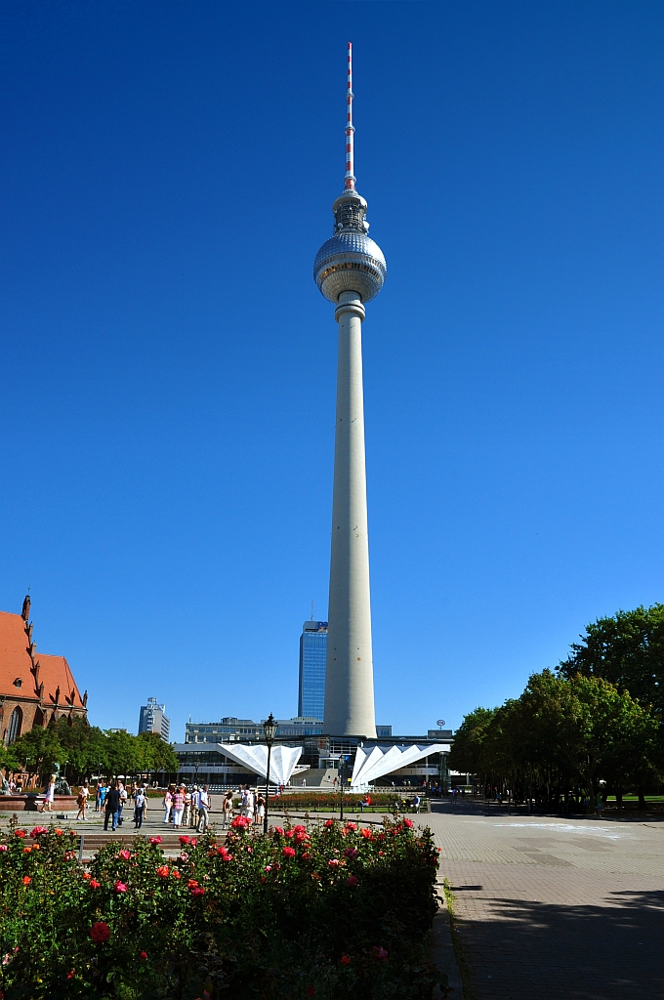

𝔅𝔢𝔯𝔩𝔦𝔫
Berlin, capital and chief urban centre of Germany. The city lies at the heart of the North German Plain, athwart an east-west commercial and geographic axis that helped make it the capital of the kingdom of Prussia and then, from 1871, of a unified Germany. Berlin’s former glory ended in 1945, but the city survived the destruction of World War II. It was rebuilt and came to show amazing economic and cultural growth.